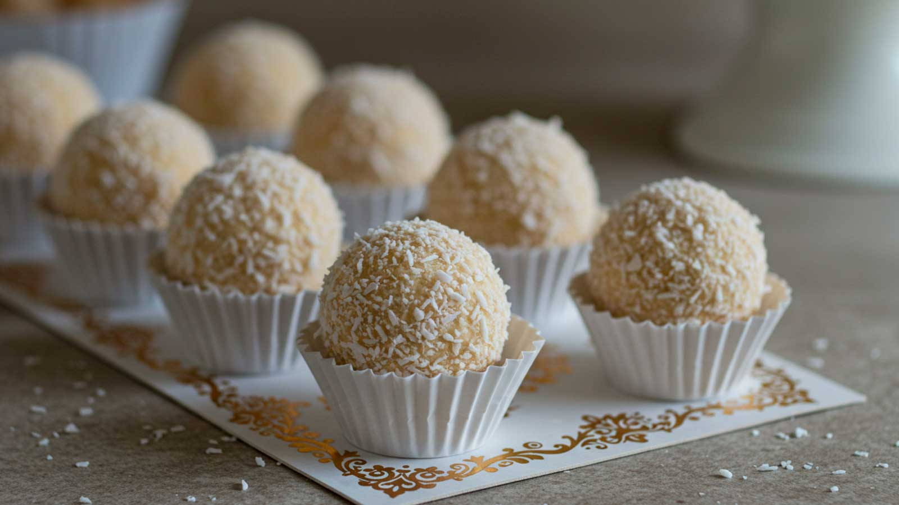
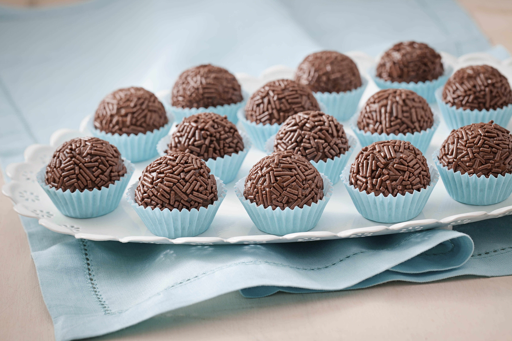
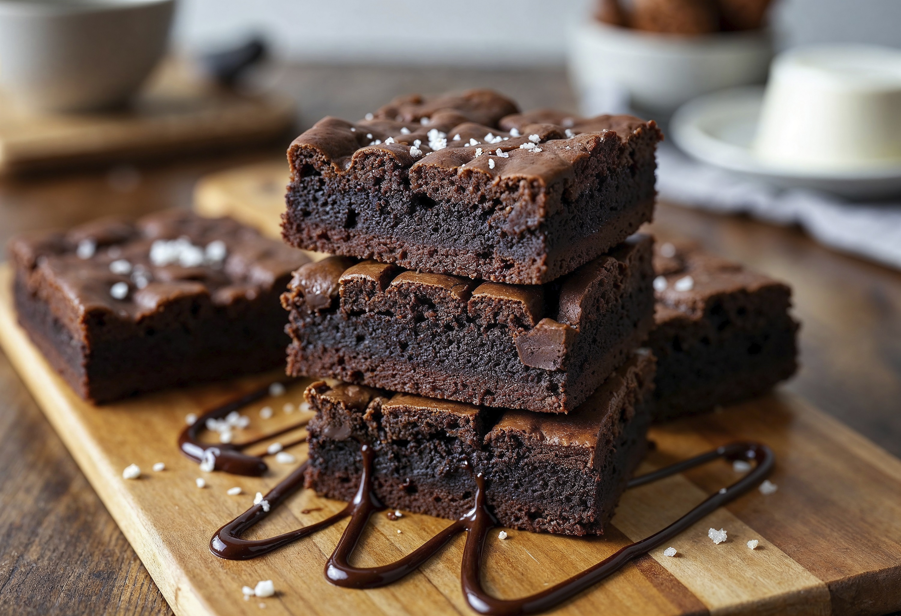
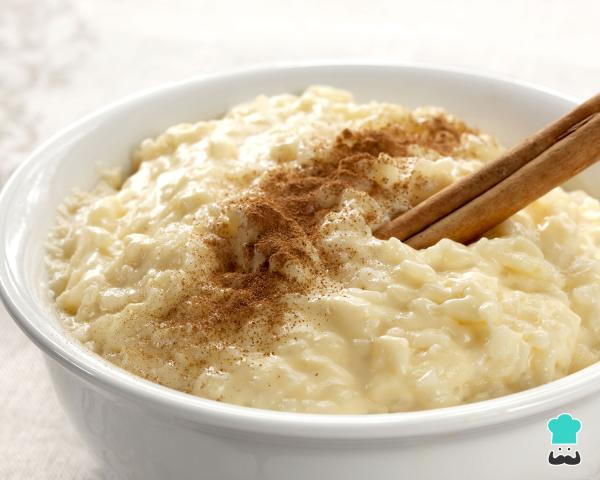
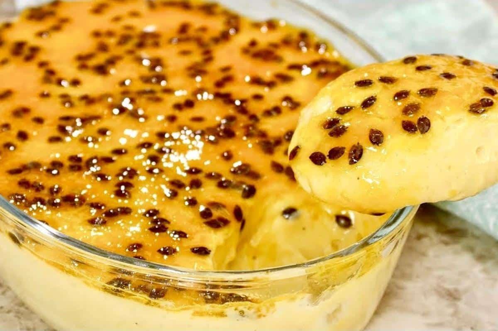
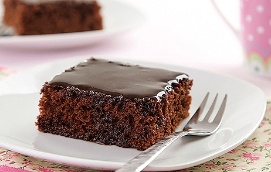
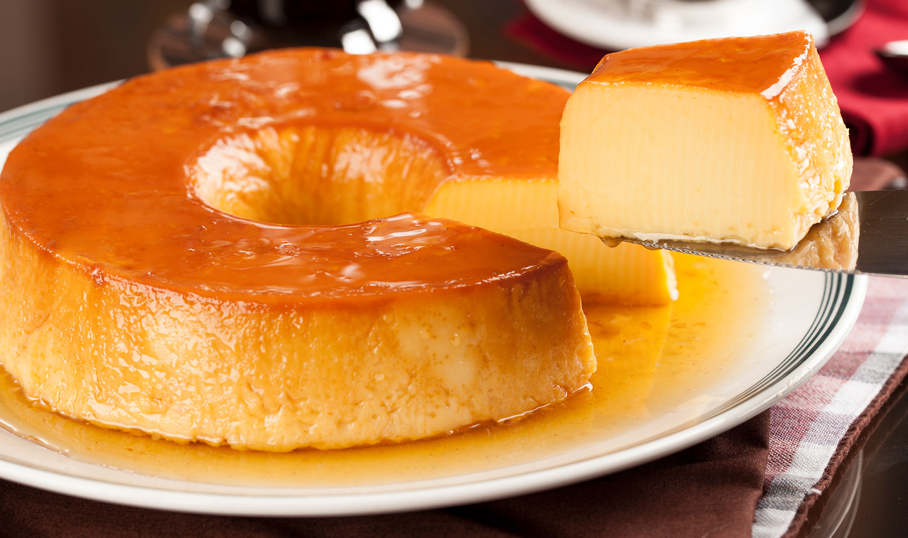
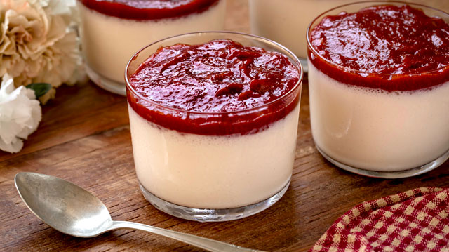
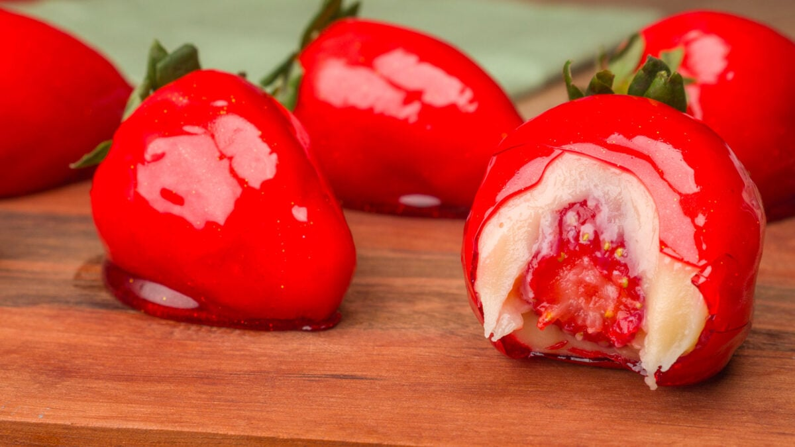

Bem-vindo ao Mundo dos Doces! Este site foi criado para compartilhar
receitas deliciosas e fáceis de fazer, como brigadeiro, brownie,
beijinho e outras sobremesas. Aqui, você poderá conhecer diferentes
doces e aprender como prepará-los de forma simples e saborosa.
Receitas
Beijinho

Ingredientes
0 de 5 ingredientes separados
Modo de preparo
Em uma panela, coloque o leite condensado, a manteiga e o coco ralado.
Misture bem e cozinhe em fogo baixo, mexendo sempre.
Quando a massa desgrudar do fundo da panela (ponto de brigadeiro),
desligue o fogo.
Transfira para um prato untado com manteiga e deixe esfriar completamente.
Unte as mãos, faça bolinhas e passe no açúcar cristal ou no coco ralado.
Decore cada beijinho com um cravo-da-índia, se desejar.
Rendimento: cerca de 20 a 25 beijinhos.
Brigadeiro

Ingredientes
0 de 4 ingredientes separados
Modo de preparo
Em uma panela, misture o leite condensado, a manteiga e o chocolate em pó.
Cozinhe em fogo baixo, mexendo sempre, até que a mistura engrosse e comece
a desgrudar do fundo da panela (ponto de brigadeiro).
Transfira para um prato untado com manteiga e deixe esfriar completamente.
Unte as mãos com manteiga, faça bolinhas e passe no chocolate granulado.
Rendimento: cerca de 20 a 25 brigadeiros
Brownie

Ingredientes
0 de 8 ingredientes separados
Modo de Preparo
Preaqueça o forno a 180°C.
Derreta o chocolate e a manteiga juntos, mexendo até obter uma mistura homogênea.
Em outra tigela, bata os ovos com o açúcar até misturar bem.
Adicione o chocolate derretido e a baunilha.
Incorpore a farinha e o sal, mexendo apenas até a massa ficar uniforme.
Acrescente as nozes ou castanhas, se desejar.
Despeje a massa em uma forma quadrada (aprox. 20 por 20 cm) untada ou
forrada com papel-manteiga.
Asse por 25 a 30 minutos. O centro deve permanecer levemente úmido.
Deixe esfriar antes de cortar em quadrados.
Dica: Para um brownie mais cremoso, asse por menos tempo.
Para um brownie mais firme e parecido com bolo, deixe alguns minutos a mais no forno.
Arroz Doce

Ingredientes
0 de 7 ingredientes separados
Modo de preparo
Lave o arroz e coloque-o em uma panela com a água, a canela em pau e os cravos.
Cozinhe até a água secar quase completamente.
Adicione o leite e cozinhe em fogo baixo, mexendo de vez em quando.
Quando o arroz estiver bem macio, acrescente o leite condensado.
Cozinhe por mais 10 a 15 minutos, mexendo para não grudar no fundo da panela.
Retire a canela em pau e os cravos.
Sirva quente ou gelado, polvilhado com canela em pó.
Rendimento: cerca de 6 porções
Mousse de Maracujá

Ingredientes
0 de 3 ingredientes separados
Modo de preparo
Coloque o leite condensado, o creme de leite e o suco de maracujá no liquidificador.
Bata por 2 a 3 minutos até obter um creme homogêneo.
Distribua em taças ou em uma travessa.
Leve à geladeira por pelo menos 2 horas.
Cobertura (opcional)
0 de 3 ingredientes separados
Nega Maluca (ou bolo de chocolate)

Ingredientes
0 de 7 ingredientes separados
Cobertura
0 de 4 ingredientes separados
Modo de preparo
Preaqueça o forno a 180°C e unte uma forma média com manteiga e farinha.
No liquidificador, bata os ovos, o açúcar, o leite e o óleo até obter uma
mistura homogênea.
Transfira para uma tigela e adicione a farinha, o chocolate e o fermento,
misturando delicadamente.
Despeje na forma e leve ao forno por 35–40 minutos, ou até o palito sair limpo.
Cobertura
Misture os ingredientes em uma panela.
Leve ao fogo baixo, mexendo sempre, até formar uma calda cremosa.
Despeje sobre o bolo ainda morno.
Pudim de Leite Condensado

Ingredientes — Calda
0 de 2 ingredientes separados
Ingredientes — Pudim
0 de 3 ingredientes separados
Modo de preparo
Faça a calda
Coloque o açúcar em uma forma própria para pudim.
Leve ao fogo baixo até derreter e formar um caramelo dourado.
Adicione a água quente com cuidado e mexa até dissolver os torrões.
Espalhe a calda pelo fundo e pelas laterais da forma.
Prepare o pudim
Bata no liquidificador o leite condensado, o leite e os ovos por cerca de 1 minuto.
Despeje a mistura na forma caramelizada.
Asse em banho-maria
Cubra a forma com papel-alumínio.
Coloque-a dentro de uma assadeira com água quente.
Asse em forno preaquecido a 180 °C por aproximadamente 1 hora e 20 minutos,
ou até firmar.
Geladeira
Deixe esfriar.
Leve à geladeira por pelo menos 4 horas (de preferência de um dia para o outro).
Desenforme e sirva.
Dica: Para um pudim mais lisinho, passe a mistura por uma peneira antes de colocar na forma.
Mousse de Chocolate
Ingredientes
0 de 4 ingredientes separados
Modo de preparo
Derreta o chocolate em banho-maria ou no micro-ondas.
Misture o creme de leite ao chocolate derretido até formar um creme liso.
Bata as claras em neve.
Adicione o açúcar aos poucos e continue batendo até obter um merengue firme.
Incorpore delicadamente o merengue ao creme de chocolate, mexendo de baixo para cima.
Distribua em taças e leve à geladeira por pelo menos 3 horas.
Versão Rápida (3 ingredientes)
0 de 3 ingredientes separados
Bata tudo no liquidificador até ficar homogêneo e leve à geladeira por 2 horas.
Romeu e Julieta gelado

Ingredientes
0 de 5 ingredientes separados
Modo de Preparo
Prepare o creme de queijo:
Bata no liquidificador o queijo, o leite condensado e o creme de leite até
formar um creme liso. Se necessário, adicione um pouco de leite para ajudar a bater.
Monte a sobremesa:
Em um refratário ou em taças individuais, alterne camadas de creme de queijo
e pedaços de goiabada.
Leve à geladeira:
Deixe por pelo menos 2 a 3 horas para firmar e ficar bem geladinho.
Opcional:
Pode decorar com lascas de goiabada ou queijo ralado por cima antes de servir.
Morango do Amor

Ingredientes — Para os morangos
0 de 2 ingredientes separados
Ingredientes — Para o brigadeiro branco
0 de 3 ingredientes separados
Ingredientes — Para a calda vermelha
0 de 4 ingredientes separados
Modo de preparo
Prepare os morangos
Lave bem os morangos e seque completamente.
Espete cada morango em um palito.
Faça o brigadeiro branco
Em uma panela, misture o leite condensado, a manteiga e o leite em pó.
Cozinhe em fogo baixo, mexendo sempre, até desgrudar do fundo da panela.
Deixe esfriar completamente.
Envolva os morangos
Com as mãos levemente untadas, cubra cada morango com uma camada fina de
brigadeiro branco.
Coloque sobre papel-manteiga e leve à geladeira por cerca de 20 minutos.
Prepare a calda
Misture açúcar, água, vinagre e algumas gotas de corante vermelho.
Cozinhe sem mexer até atingir o ponto de bala dura (aproximadamente 145–150°C).
Se não tiver termômetro, pingue um pouco da calda em água fria: ela deve
endurecer imediatamente e quebrar ao morder.
Banhe os morangos
Mergulhe rapidamente cada morango na calda.
Escorra o excesso e coloque sobre papel-manteiga untado ou tapete de silicone.
Espere secar
Em poucos minutos a casquinha ficará dura e brilhante.
Dicas importantes
Os morangos precisam estar totalmente secos, senão a calda pode não aderir.
Trabalhe rápido após a calda atingir o ponto.
Evite guardar na geladeira por muito tempo, pois a umidade pode amolecer a casquinha.